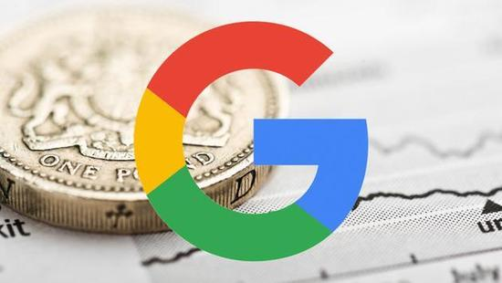

网易科技讯11月25日消息，据华尔街日报报道，印尼税务局的高级官员穆罕默德·哈尼夫（Muhammad Haniv）日前证实, Alphabet子公司谷歌已经接近与印尼政府达成税收和解，谷歌需要补交的税款不超过7300万美元。哈尼夫表示：“对于谷 歌来说，这相当于获得税收特设！”

哈尼夫说，如果双方达成和解，谷歌将不会被罚款，补交的税款很可能不超过1万亿印尼卢比（约合7300万美元）。9月份时， 印尼税务局曾宣称，谷歌2015年所欠税款和罚款高达5万亿印尼卢比，这个数字是根据谷歌在印尼市场上数字广告营收计算出 来的。谷歌拒绝对此发表置评。但谷歌此前曾表态，将会支付所有合适的税款，与印尼政府积极配合。
印尼总统佐科·维多多(Joko Widodo)领导的政府正考虑上调税率，以获得更多资金支持基础设施建设。印尼政府将目标对准了 许多跨国公司。4月份时，印尼税务局表示姜凯时调查外国互联网公司，并宣称它们多年来都在逃税。
在谷歌案件中，印尼税务官员称，该公司的印尼分部归属于谷歌亚太总部，其地区总部设在新加坡，负责处理所有印尼广告合同。 印尼政府宣称，谷歌亚太总部负责支付印尼部门的开支，同时也掌控着印尼市场收益。谷歌拒绝对此做出置评。
印尼税务官员称，2015年，印尼市场数字广告收入约为8.3亿美元，而谷歌和Facebook就占了70%。这两家公司都未就此做出回应。 在与新加坡国有投资公司Temasek进行联合调查发现，谷歌2015年在印尼数字广告市场获益3亿美元。
尽管印尼政府正针对跨国公司追缴税款，但同时也在解除对多行业的限制，以便吸引外国公司投资。印尼于今年年初推出“税收特赦” 政策，已经吸引数十亿美元投资。印尼政府还在考虑将企业所得税率从当前25%降至17%，以与邻国新加坡持平。印尼是东南亚最大 经济体，但新加坡却是最受跨国公司青睐的地区中枢。